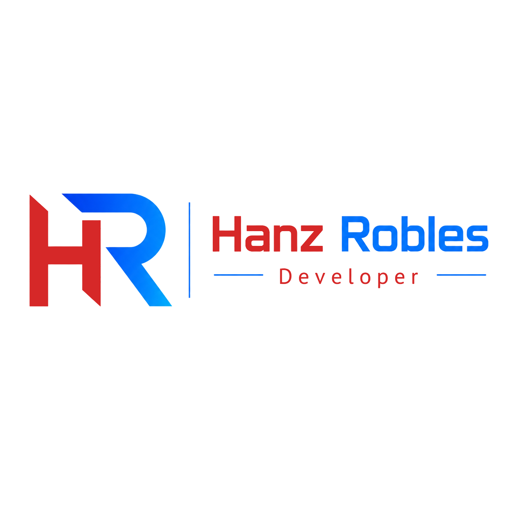

ビザ
日本人の配偶者等
就労制限なし
就業可能 | 名古屋市・愛知県 | 日本語N3会話レベル | 英語対応
システムエンジニアリングを学んだフロントエンド開発者です。WordPressのカスタムサイトから、JavaScript、React、TypeScript、Node/Express、Supabaseを使ったWebアプリまで制作しています。名古屋在住で、配偶者ビザのため就労制限はありません。
日本人の配偶者等
就労制限なしJLPT N3
会話レベル名古屋市・愛知県
出社・リモート対応フロントエンド開発者
Web / WordPress / Reactペルー出身のシステムエンジニアで、現在は名古屋に住んでいます。日本語を学びながら、Web開発者として日本でキャリアを作るために、実践的なプロジェクトを継続して制作してきました。
WordPressのカスタムテーマ構築、ACFを使った編集可能なサイト、JavaScriptによるUIロジック、CRUD、API連携、Reactアプリ、Node/ExpressとSupabaseを使ったフルスタックアプリまで経験しています。ユーザーにとって分かりやすく、保守しやすいWeb体験を作ることを大切にしています。
フロントエンド、WordPress、API、認証、データベースを含むWeb開発を中心に学習・制作しています。
Full Stack
日本で働きたい外国人向けの求人プラットフォームです。Supabase Auth、PostgreSQL、Node/Express API、企業パネル、管理者パネルを実装しました。
技術ポイント: ログイン、ロール管理、CRUD、承認フロー、データベース設計を含むバックエンドを構築。
React + API
都市検索、現在の天気、週間予報、ローディング・エラー表示を含むReactアプリです。外部APIの実データを表示します。
技術ポイント: fetch、非同期処理、APIデータのレンダリングを実装。
WordPress
ACFを使い、管理画面からテキストや画像を編集できる企業向けランディングページを制作しました。
技術ポイント: 非エンジニアでも更新できる編集可能なフィールドを設計。
CRUD App
ログイン、ユーザーロール、本の管理、在庫、カート、貸出機能を含む図書館アプリです。
技術ポイント: LocalStorageを使って認証風のフローとCRUDを構成。
JavaScript UI
カテゴリ、商品詳細、数量変更、税金、合計金額を含むレストラン向けデジタルメニューです。
技術ポイント: フレームワークなしでカートロジックと合計計算を実装。
約2年間日本語を学び、JLPT N3相当の会話レベルを身につけました。
プログラミング、データベース、ネットワーク、システム開発に関する基礎を学びました。
PCメンテナンス、ネットワーク設定、防犯カメラ設置、Webページ制作、デザイン改善などを経験しました。
日本人の配偶者等 / 就労制限なし
Web、UI、WordPress、JavaScript、React
すぐに勤務可能 / 名古屋またはリモート
調査力、丁寧なUI、継続学習、動くデモを最後まで作る力。
フロントエンド、WordPress、React、Web制作に関する機会がありましたらご連絡ください。